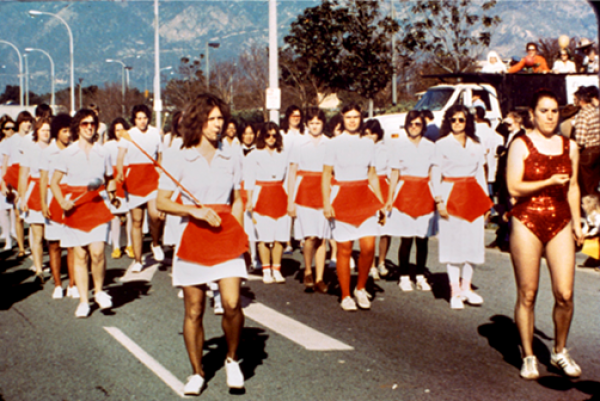
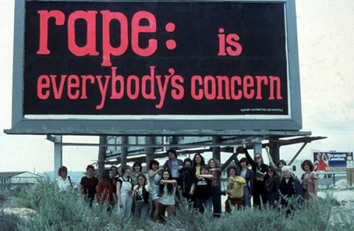
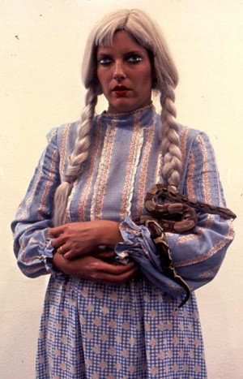
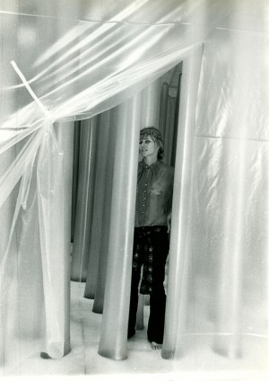
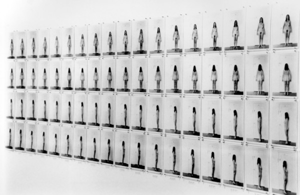

-
The Second Time as Farce
by Martha Rosler February 21, 2011
All-City Waitress Marching Band at the DooDah Parade, Pasadena 1979. Photo via the author
Reenactment and Reperformance in ContextHegel remarks somewhere that all great world-historic facts and personages appear, so to speak, twice. He forgot to add: the first time as tragedy, the second time as farce. Men make their own history, but they do not make it as they please; they do not make it under self-chosen conditions, but under conditions existing already, given and transmitted from the past. The tradition of all the dead generations weighs like a nightmare on the brain of the living. And just as they seem to be occupied with revolutionizing themselves and things, creating something that did not exist before, precisely in such epochs of revolutionary crisis they anxiously conjure up the spirits of the past to their service, borrowing from them names, battle slogans, and costumes in order to present this new scene in world history in time-honored disguise and borrowed language. – Karl Marx, The Eighteenth Brumaire of Louis Bonaparte
Imagine me in a cap and T-shirt that read I survived the re-enactment of (fill in your performance here.)
Let me attempt some interventions into the discussion of performance reenactment. (In other words, I have some questions about re-enactments.)
What are the benefits, and who gains? What are the losses and who loses?
If we can say that the aim is the conservation of the performances themselves, we need to know more. What exactly is conserved? Is performance art strictly analogous to dance, music, and other live time-based arts? If so, does that mean that performances are actually scored or must be in the future, in order to be taken seriously? Are such scores to be fully codified and rigid, or are they to be sketchier notes, such as musical scores? That is, are they choreographed or a set of general directions?
How different are they from, say, historical re-enactments meant more as spectacle than history, such as jousting tournaments at Renaissance Faires or Civil War battle reenactments, with or without paintball options? If we can expect the institutionalization of performance reenactments, will they be curated? Will they be shaped or even softly censored by institutional funders and organizations?
Further: context: How will the historical context of the works be indicated and conveyed? There have regularly been efforts on television to revisit national or world historical moments through programs that frame the events in modern terms, laughably trapping us in the constant present. Of course, this is the curse of all history beyond living memory and afflicts even some very recent histories reshaped by public revisionist narrations.
What of the entire character and impetus of performance art? We can look to video for a precedent. Performance, like video in its earliest moments, was seen by its inventors and practitioners as a means of evading, bypassing, and even opposing several institutions. That of theater, first of all, with its scripts, theatrical formulae, and proscenium arches, though theater itself has gotten there simultaneously, and not only through improv, but also through the theatrical approaches of modernism, vernacular plays, experimentalism, Dada, surrealism, poor theater, and many other approaches, especially in Europe. But performance, like video, was in large part attempting to bypass the objectness, the statically captured work of art, and also the gatekeepers and tastemakers— the curators, museum directors, gallerists, funders, and so on—who mediate between performer and audience, which latter was often, it must be said, the community of artists.
Taste is the enemy of art, declared Duchamp, and Duchamp was, if nothing else, the enemy of art as object.1 Taste drives the newly born canonical history of performance art, because taste-making is the role of institutional embrace; even if the taste is for bad taste, it sets up the limits of the possible and the acceptable. A grad student in art history mentioned the other day that she was researching the history of humor in women’s performance; this may pass muster in the proliferating Performance Studies departments, but the newly aborning History of Performance museological discipline is likely to bypass humor, scorn, and derision for gravitas, at least for the time being. The revolutionary power of women’s laughter, to borrow a phrase, has been a mainstay not only of feminism but also of feminist performance, of which it is a part. But humor is a low and subversive form, liable to skewer those whom we wish to court.
As with the resurrection of High, neo-Expressionist painting on the cusp of the 1980s, it is wise to seek a European model. Performance – following the video trajectory – is in the process of losing its history of resistance to institutions in favor of the frank commodification that accrues to genius-status. The performance history now under construction has the added luxury, however, of retaining the whiff of resistance already acknowledged as having taken shape as resistance to dead regimes. This ironically reinstates our government’s favorite art formula, the Cold War dialectic of Free Us vs. Enslaved Them. The feminist and gay-liberation context that has played so prominent a role in performance has been replaced with mere gender identity that specifically eschews its activist role. This is formulaic. Behind every genealogical choice in art there is an ideological and perhaps even a financial incentive. One of things we have to remember is that liberation is about possibility and expression is not. The burden of performance, let it be said, has been resistance, and it is clear that you do not look to the major institutions of the artworld for resistance.
The second question, then, is what is the horizon for such work now, as opposed to what it has been. Once the institution has embraced the genre, what has become of resistance or more positively, of the hope for social transformation—which has been the visionary desire of the modernist arts as well as of those born with the social movements of the 1960s and 1970s?
We can compare the regularly seen re-enactments by artists of historical speeches with those performances that center on the body of the performer as ‘the body in question.’ The former are often re-enactments of speeches given by movement figures, speaking directly to insurgent constituencies of social Others; if these are not to devolve into kitsch we have to take seriously the intent of the re-enactors to pass along some presently relevant truth not about universal humanity, about humanity in general, but about the present moment and the ‘historical conjuncture.” In other words, in these re-enactments individuals speak to other individuals who recognize themselves as part of a community, or share an identification, that is larger than the art world community. These reenactments are, one presumes, done not simply for aesthetic delectation or spectacle but to move people philosophically and personally, not in the interests of individual “cultivation” but as citizens and participants in exigent world situations.
In other words, simple “experience” cannot be the goal of art, in particular of performance art— otherwise we are back to the Renaissance Faire or Civil War re-enactments, which provide experience or entertainment value, while ours are a taste-class cut above. I incautiously used the word truth — if there is such a thing, of course, we are required to say— as the participants in the photo symposium here a few weeks ago univocally affirmed, though not in quite these words; they affirmed that photographs do not have truth value; they do not tell us anything directly about the world. The long-contested singular aestheticization of a vital and living form is in the 21st century an axiom in the institutional museum world. The bad version of postmodernism attempts to ventriloquize history and culture as a secret story only it acknowledges. As it turns inward, art seeks, instead of Transcendence—which since Pop most observers have agreed is a fool’s errand—Something Else: disciplinary-bound historical narrative.
Much of performance initially was indifferent and often directly hostile to being photographed or otherwise “captured”; it was all process, no profit, all presence (or present-ness?), no past. In addition to critiquing a world in which the imagination is colonized, we may say that such art used to extrapolate a future rather than simply archive a present. In other words, it was something of a cult or art world sect, out there with the Situationists, the psychogeographers, the Dadaists, and weird European theater folk, those dissidents and dissenters who chose exodus over exile.
Less full-throatedly social but certainly critical was the resistance of performance not simply to commodification tout court but specifically to television and other forms of mass culture. Appropriation of mass culture, when it occurred as in Pop, was an effort to subsume and subvert the enemy, although now we can say that the celebrity/fashion model has long been diligently pursued. We are raiding our own iceboxes, as did architecture in the eighties and nineties before CAD (computer assisted design) allowed a wormhole to the present and hopefully the future, permitting the formalist raid on the historical pattern book to end.
The question underlying discussions like this is how to historicize art forms like performance, since the question whether to do so seems to have been settled for now. This is one of a series of questions being raised not only in the face of a financial depression that has seriously hobbled the trade in art but also in light of the longer-term changes in the structures and contents of the art world, of art, and of the entire system of distribution, from museums to the virtual forms of image transport.
We could profitably say that the question regarding performance as perhaps the least material form of art-world art and the question about photography as that most perilously close to the popular and, as Susan Sontag once deemed it, the most theatrical, is best understood in the context of what has been called the Experience Economy. Here I can only nod to Michael Fried’s question about the nature of the art object in matters of literalism, presence/presentness, transcendence, and theatricality. I would argue that theatricality is inescapable when confronting an art whose commodity face is what we first encounter. But certainly it is always in question in performance, which is generally understood to be embodied experience.
Along with Experience goes Authenticity, the search for which may be central to a prevailing view of performance art— and in which it has supplanted painting, which was formerly seen as the bearer of authenticity… perhaps alongside poetry.
It is all the more interesting, then, to consider the foundational elements of feminist performance in Southern California, which center on questions of experience and authenticity. The formula that feminist art could “raise consciousness, invite dialogue, and transform culture” was what Cheri Gaulke says she learned at the Feminist Studio Workshop at the Woman’s Building; Gaulke had moved to Los Angeles in the early 1970s to study there and became a founding member of the feminist performance groups the Feminist Art Workers and the Sisters of Survival.
Performance in Southern California in the early 1970s was enlivened and revitalized by women like Gaulke, who with their teachers adopted some of the foundational doctrines of second-wave feminism. These included—aside from the shared experience of professional exclusion through unapologetic male chauvinism— the recognition that a mass movement would go far toward combating isolation and disempowerment both private and public. Central to their group practice was the feminist technique of “consciousness raising.” Separate pedagogical, production, publicity, and exhibition mechanisms and spaces were made by and for women, regardless of their relation to men, although lesbian separatism played a role in these organizations and groups— and had in several instances gotten there first, with networks, journals, and exhibition venues. The work women produced was seen as beyond therapeutic—though that term would have been rejected; in far greater measure it was seen as a collective healing of social wounds and thus as public acts directed beyond even the sisterhood, or the putative community of women.
Often, the work with widest impact was done within, through, or in secession from educational institutions, notably Cal State Fresno and the newly founded Cal Arts. The women’s initiatives, such as Womanhouse, flouted the heavily individualist ethos of the art school. Other women—Barbara Smith, Nancy Buchanan, Rachel Rosenthal, Lynn Hershman, and others —were already working in performance outside these educational contexts, but not in complete isolation from them— or from performance traditions, as thin as they might be, mostly deriving from New York models. Much of the founding faculty of the feminist groups and programs came from the Midwest or the East Coast and were shaped or influenced by art discourses there, and formations like East-West Bag tied New York and LA women.
Many of the Cal Arts women studied with Kaprow, who by the time he settled in at Cal Arts had developed away from the Happenings and toward small groups of performer-participants with no audience. I can speculate that Kaprow’s feminist students at Cal Arts benefited from his more rigorous, less improvisational emphasis on participatory events. But other women were performing as soloists or pairs of performers, facing audiences (Barbara Smith and Nancy Buchanan, for example). For some, stagecraft was important; for others, minimal.
Eleanor Antin and I both moved to San Diego, before 1970, from New York City, where we were well aware of performance and radical theater/anti-theater traditions and knew, for example, Kaprow, Carolee Schneemann, Yvonne Rainer, Fluxus members, and Vito Acconci —who was then still a poet— though my immersion in the New York avant-garde was more marginal than Antin’s, as I was somewhat younger. Ellie and I became part of a desultory women’s performance group in San Diego in the early 1970s, in which ad hoc performances were done as exercises, vaguely reminiscent of theater workshops, with no intention of public presentation. If I moved to California as a semi-lapsed painter but also a maker of photographs, photomontages, and a bit of sculpture, I soon became a performance artist on the understanding that performance could be taken to include a spectrum of actions stretching from guerrilla hit-and-run activities to temporary or even long-term installation.
Performance by women, activity well advertised by the Women’s Building print workshops, was a solid presence in the LA scene, which in any case lacked commercial galleries and often relied on artist-run spaces like LAICA and LACE as well as WomanSpace. A handful of male performers were also active, and some had studied at Cal Arts with Kaprow; their work of course did not fit the utopian feminist model. Chris Burden, John Duncan, Paul McCarthy, Kim Jones, and Mike Kelley were part of the scene, and some were embraced by more mainstream art institutions—whose approbation they either actively sought or did not reject— while the women remained outside. As far as I know, Paul McCarthy and even more so Mike Kelley, tip their hats to the precedents set by the women performance artist of LA—while they have gone on to become the anointed of West Coast performance art or just art, with no preceding adjective, thanks largely to at least one energetic male LA museum director.
Few of the Southern California feminists, whether those associated directly with the programs I have described or with other spaces and groups such as Grandview Gallery or the women artist groups XX or Mother Art, confined themselves to performance work. For many, performance was enacted within a known circle of people and carried within it the idea not of traumatic repetition, as seems to be the case with some of the men’s work, but rather of empowerment, transcendence, overcoming. Many adopted it not as an exclusive practice but as adjunct to others, especially but not only film and video. An important strain of early video, as you may recall, was artists recording performances, monologues, or actions within studio confines. Some women continued to work in performance, and others, like Cheri Gaulke or Suzanne Lacy, became organizers of events in public, in pursuit of social justice; some like Nancy Buchanan used video and video workshops for similar ends; while others went on to do more studio-based work.
But the revisionist history of performance, like the revisionist history of video, has had to contend with the absolute need of institutions to place at the apex of significance someone who has not previously been acknowledged as acting within a movement of peers. This is to look further afield or slightly aside of the pack to elevate someone new as the True Original, a Singularity if not the Originary. We saw this with the reception of color photography through the unlikely choice of William Eggleston, and the afore-mentioned selection of the West Coast male performers over the women in foundational roles. We saw it also with the preference for already New York-gallery-based video producers over the robust activity of video producers world wide engaging in the other, less heavily capitalized modes of distribution available to portable digital media.
Further, reenactments presuppose archives. We can posit that the trend away from theory as the basis for curation in favor of archive rifling is part of the horizonlessness of contemporary art. But what happens to the archive when it becomes collected, a museum acquisition, rather an object of study?
During the first, infamous debut of the culture wars in the 1980s and 1990s, former Nixon legal adviser Leonard Garment had a brilliant solution: fund the archive, not the artist. Fund the established institutions and preservationists and stay away from the dangerously unpredictable and controversial artists. Institutions themselves, and young curators in training, have gladly discovered the archive-as-subject.2
If reenactment brings us mystification rather than mythopoesis, the performing of the Eternal Return, we have achieved the opposite of creative human freedom. When we see certain previously uncommodifed forms as switching from resistance to celebration, we can indeed fear that the second time is farce.
The preceding was adapted from talks given at NYU and at MoMA in 2010.
- Actually this quote is one of those circulating pieces of verbal flotsam, attributed not only to Duchamp but also to Picasso, Truman Capote, Bono, and Helmut Newton, in descending order. [↩]
- We might charitably interpret this as an effort to take hold of neglected, uncommercialized elements of art history, making archive fever somewhat akin to the impulses behind some reperformance, as cited earlier. [↩]

1 Comment
Thursday links | Tyler Green: Modern Art Notes | ARTINFO.com
[...] Rosler asks smart questions about re-enactments, be they of Civil War battles or performance [...]